End-to-End Example: EV Drive Cycle Analysis¶
This comprehensive tutorial demonstrates a complete TrueFidelity workflow using the Drive Cycle system—an electric vehicle powertrain simulation with VCU (Vehicle Control Unit), MCU (Motor Control Unit), and BMS (Battery Management System). You'll learn how to create a system, configure networks, deploy ECUs, capture live data, analyze CAN logs with playback, and perform signal injection testing.
Time Estimate¶
- System Setup: 15-20 minutes
- Deployment and Monitoring: 10-15 minutes
- Data Analysis: 20-30 minutes
- Total Time: 45-65 minutes
Prerequisites¶
Before starting this tutorial, ensure you have:
- TrueFidelity Desktop application installed and licensed
- Docker Desktop running (or Mock Mode enabled for simulation)
- Sample BLF log files (available in the examples folder)
- The Drive Cycle DBC file with signal definitions
- Basic familiarity with CAN bus concepts and EV powertrain systems
Scenario Overview¶
You're investigating an issue in an electric vehicle's drive cycle system. The symptoms include:
- Unexpected motor torque oscillations during regenerative braking
- Intermittent SOC (State of Charge) reporting anomalies
- Occasional communication delays between VCU and MCU
Your task is to:
- Create a test bench system that models the EV powertrain network
- Replay captured log data to reproduce the issue
- Analyze signal patterns to identify root causes
- Test potential fixes using signal injection
- Document findings for the engineering team
Part 1: System Setup and Configuration¶
Step 1: Create a New System¶
Start by creating a fresh system for your analysis work.
- Launch TrueFidelity Desktop:
- If you see an existing system, save any changes first
-
The application starts in System Design mode by default
-
Create the new system:
- Click File → New from the menu bar
- Or use the keyboard shortcut Ctrl+N (Cmd+N on Mac)
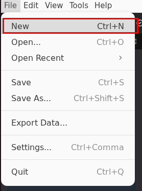
- Configure system properties in the dialog:
- System Name: Enter
Drive Cycle - Description: "Electric vehicle drive cycle simulation with pedal inputs and motor control"
- Click Create
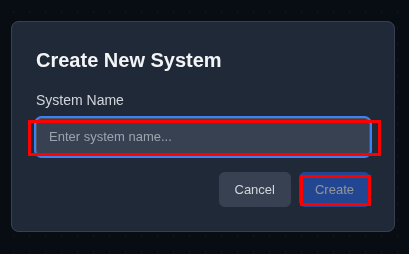
After creation, TrueFidelity automatically opens the System Design workspace with three main areas:
- Left panel: Toolbox containing draggable components
- Center: System Canvas where you'll build your topology
- Right panel: Properties panel for configuring selected elements
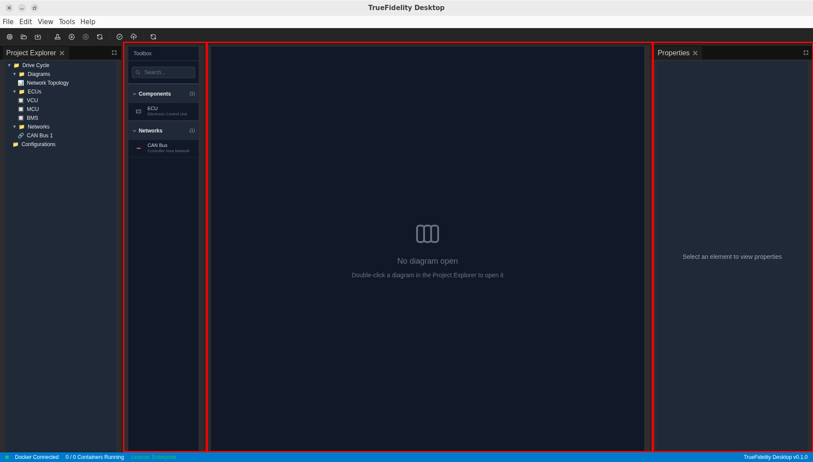
Step 2: Add ECUs to the Canvas¶
Now add the Electronic Control Units that make up the EV powertrain system.
- Locate the Toolbox panel on the left side of the screen
- It contains two main categories: Components and Networks
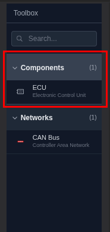
- Add the VCU (Vehicle Control Unit):
- Expand the Components category
- Drag an ECU onto the upper-left area of the canvas
- This will be your main vehicle controller handling pedal inputs
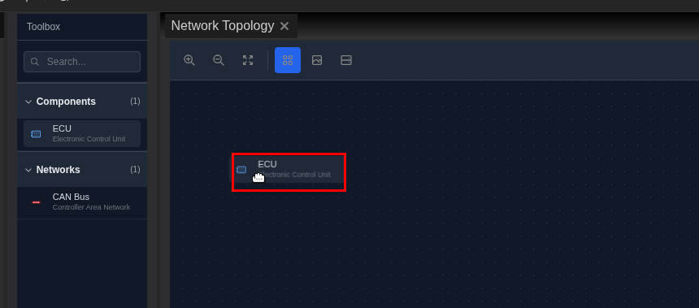
- Add the MCU (Motor Control Unit):
- Drag another ECU and place it in the upper-right area
-
This will control the electric motor and inverter
-
Add the BMS (Battery Management System):
- Drag a third ECU and place it in the lower area
- This monitors battery pack status and limits
Your canvas should now display three ECU nodes positioned for easy visualization.
Step 3: Configure ECU Properties¶
Each ECU needs hardware and software configuration matching the Drive Cycle system.
Configuring the VCU¶
- Select the VCU by clicking on it
- The Properties panel updates to show ECU settings
- Configure the VCU properties:
GENERAL Settings:
- Name: VCU
HARDWARE Settings:
- Board: Select S32K3X4EVB from the dropdown
- Memory: 16MB
- Flash: 2MB
SOFTWARE Settings:
- Operating System: Select Zephyr
- Firmware Mode: Select Binary File
- Firmware Binary: Browse to select s32k3-vcu-demo firmware (or leave empty for mock mode)
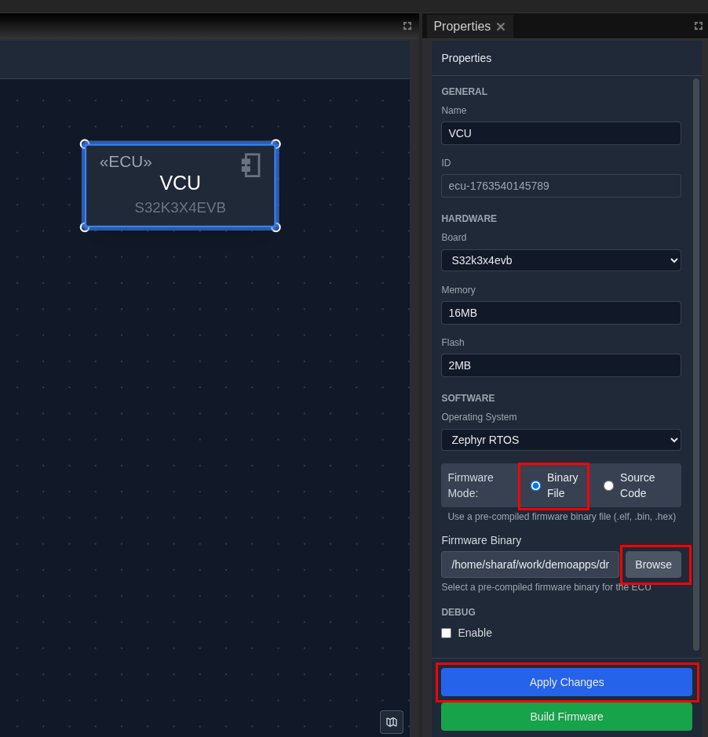
- Click "Apply Changes" to save the configuration
Configuring the MCU¶
- Select the MCU and configure:
- Name:
MCU - Board:
S32K3X4EVB - Memory:
16MB - Flash:
2MB - Operating System:
Zephyr - Firmware Binary: Browse to
s32k3-mcu-demo(optional) - Click Apply Changes
Configuring the BMS¶
- Select the BMS and configure:
- Name:
BMS - Board:
S32K3X4EVB - Memory:
16MB - Flash:
2MB - Operating System:
Zephyr - Firmware Binary: Browse to
s32k3-bms-demo(optional) - Click Apply Changes
Step 4: Add CAN Network and Create Connections¶
In TrueFidelity, ECUs connect to shared network buses, accurately modeling real automotive architectures.
- Expand the Networks category in the Toolbox
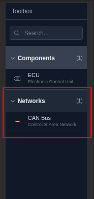
- Drag a CAN Bus onto the canvas:
- Place it centrally between your three ECUs
- The CAN bus appears as a red horizontal bar
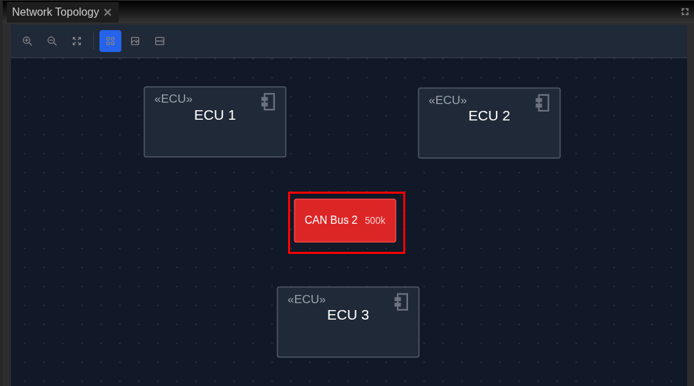
- Connect the VCU to the CAN Bus:
- Hover over the VCU to see connection handles
- Click and drag from a handle to the CAN bus
- Release when the bus highlights green
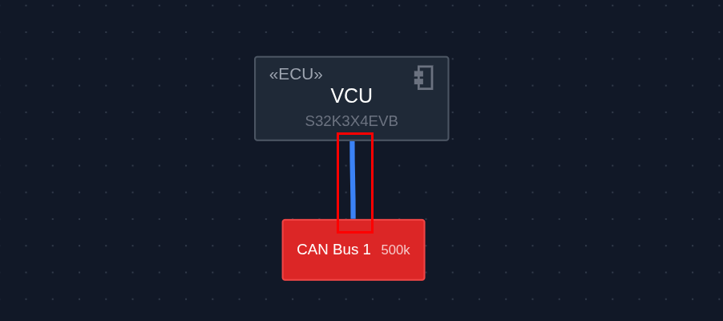
- Connect the remaining ECUs:
- Connect the MCU to the same CAN bus
- Connect the BMS to complete the network
Step 5: Configure Network Properties¶
- Select the CAN Bus by clicking on it
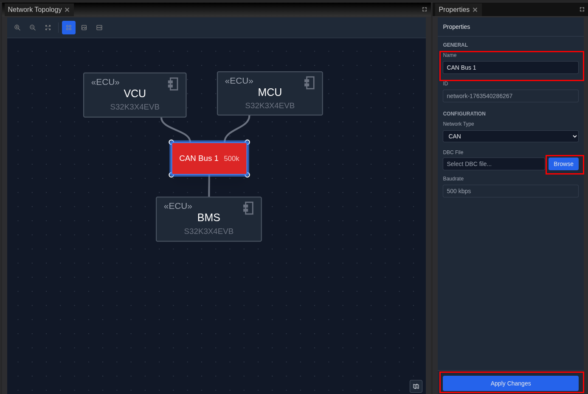
- Configure network settings:
- Name: Keep as "CAN Bus 1" or rename to "Powertrain CAN"
- Baud Rate:
500000(500 kbps) - Channel:
can0 -
DBC File: Browse to select
DBC.dbcfrom your drive scenario folder -
Click Apply Changes to save the network settings
The DBC file defines the following message structure for our EV system:
| CAN ID | Message Name | Sender | Key Signals |
|---|---|---|---|
| 0x100 | VCU_Status_1 | VCU | Veh_Spd_BE, Drive_Mode, Torque_Req |
| 0x101 | VCU_Status_2 | VCU | Brake_Pedal_Pcnt, Accel_Pedal_Pcnt |
| 0x201 | MCU_Feedback_1 | MCU | Motor_Spd, Actual_Torque, Motor_Temp |
| 0x202 | MCU_Feedback_2 | MCU | DC_Link_V, Phase_Curr_RMS, Regen_Active |
| 0x300 | BMS_Pack_1 | BMS | Pack_V, Pack_I, SOC, SOH |
| 0x301 | BMS_Limits | BMS | Max_Discharge_Pwr, Max_Charge_Pwr |
| 0x302 | BMS_Temps | BMS | Cell_Tmin, Cell_Tmax, Coolant_T |
Step 6: Save the System¶
- Save your system:
- Press Ctrl+S or click File → Save
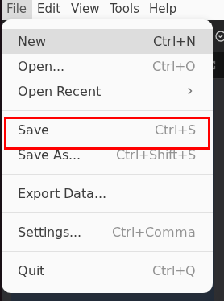
- Verify the save:
- Default filename:
truefidelity-system.json - Look for "System saved" notification
File Format
The truefidelity-system.json file contains your complete system definition including ECU configurations, network topology, and diagram layouts.
Part 2: System Deployment and Monitoring¶
Step 7: Start the System¶
Deploy your ECUs as Docker containers and start them running.
- Start the entire system from the toolbar:
- Click the Start button (green play icon)
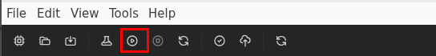
- Monitor the startup process:
- ECUs transition: Stopped → Starting → Running
- Wait for all ECUs to show green "Running" status
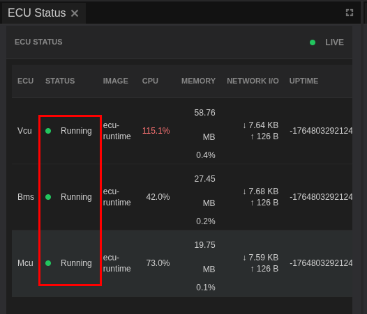
- Verify in the status bar:
- Should show "3 / 3 Containers Running"
Step 8: Switch to ECU Monitoring Mode¶
Monitor the health and status of your running system.
- Switch to ECU Monitoring mode:
- Click View → Layouts → ECU Monitoring
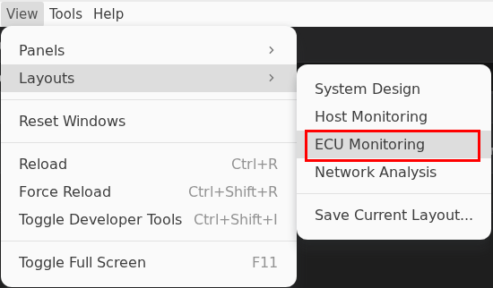
- Review the monitoring layout:
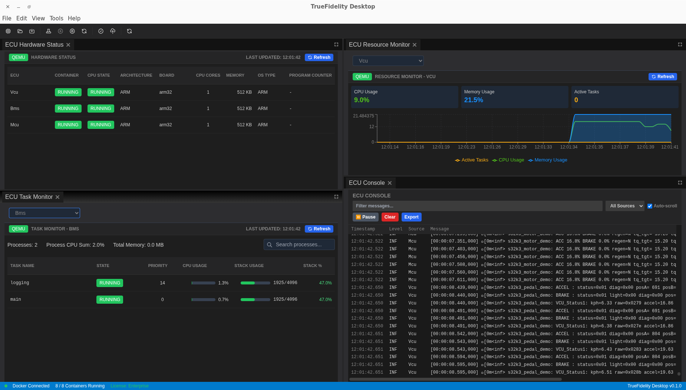
The layout includes:
- ECU Hardware Status: Shows all ECUs and their states
- ECU Console: Live log output from all ECUs
-
ECU Resource Monitor: Real-time CPU and memory graphs
-
Verify system health:
- All ECUs should show "Running" state
- CPU usage typically stays below 5% when idle
- Memory usage should be stable
Step 9: Monitor Console Logs¶
The ECU Console aggregates logs from all running ECUs:
- Review log structure:
15:25:24.991 INF Vcu [00:04:13.213,000] <inf> s32k3_pedal_demo: ACCEL : status=0x01... - 15:25:24.991: Wall clock time
- INF: Log level
- Vcu: Source ECU
-
Message content: Actual log data
-
Filter logs to focus on specific ECUs:
- Use the ECU dropdown to select "VCU", "MCU", or "BMS"
- Toggle log levels: INFO, WARNING, ERROR, DEBUG
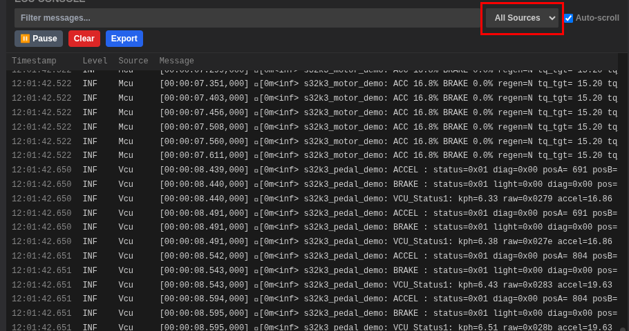
Terminal Access Not Available
The VCU, MCU, and BMS ECUs in this tutorial run Zephyr OS, which does not support terminal access. Use the ECU Console logs for debugging, or enable GDB debugging for detailed firmware analysis.
Part 3: CAN Log Analysis¶
Step 10: Switch to CAN Log Analysis Mode¶
Prepare for data analysis and playback.
- Switch modes:
-
Click View → Layouts → CAN Log Analysis
-
Understand the layout:
- Signal Viewer (left): Hierarchical signal tree from DBC
- Network Traffic (center): Live CAN frames
- Signal Chart (right): Time-series signal plots
- Signal Player & Injection (bottom): Playback and injection controls
Step 11: Load and Configure Playback Data¶
Load your captured BLF log file for analysis.
-
Open the Signal Player panel at the bottom of the screen
-
Load the BLF file:
- Click Select BLF button
- Navigate to your log file (e.g.,
drive_cycle_capture.blf) - Click Open
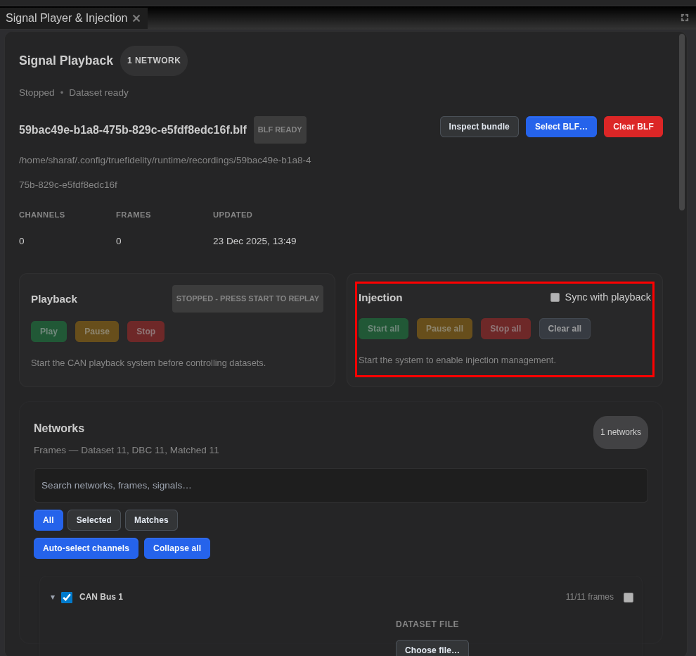
- Verify DBC mapping:
- The Networks list shows your CAN bus
- Confirm signal decoding is active
Step 12: Start Playback and Monitor Signals¶
Begin replaying the captured data through your system.
- Start playback:
- Ensure the system is running
- Click the Play button in Signal Player
-
Progress bar shows current position
-
Monitor live traffic in the Network Traffic panel:
- CAN frames appear as they're replayed
- Shows CAN ID, DLC, Data bytes, Timestamp
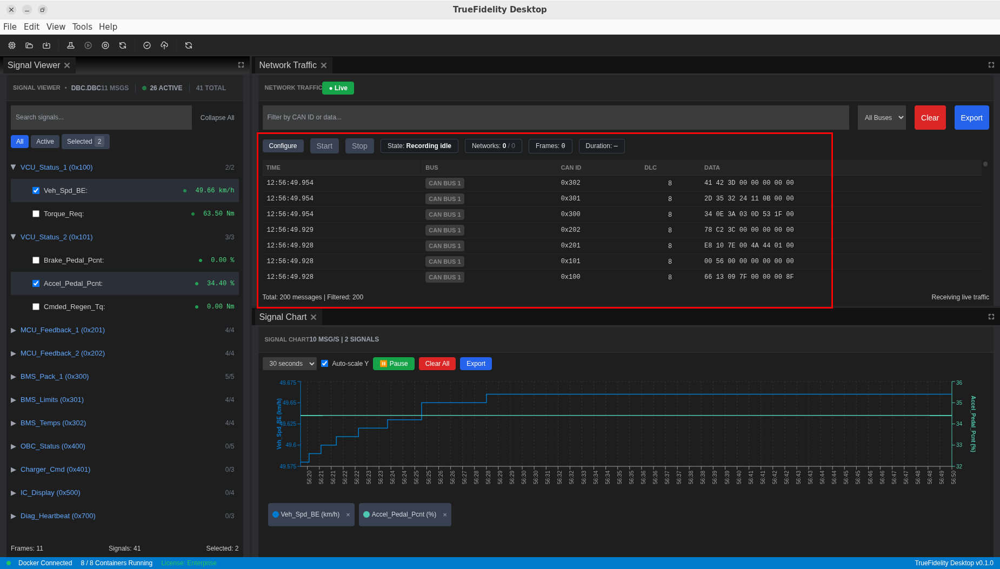
- Use traffic filters if needed:
- Filter by CAN ID (e.g.,
0x100for VCU_Status_1) - Filter by ECU source
Step 13: Analyze Decoded Signals¶
Examine the decoded signal values from your DBC file.
-
Open Signal Viewer panel (left side)
-
Find relevant signals using the search box:
- Search for "Motor" to find motor-related signals
- Search for "SOC" for battery state
-
Search for "Torque" for torque values
-
Examine signal details by expanding CAN frames:
VCU_Status_1 (0x100):
- Veh_Spd_BE: Vehicle speed in km/h
- Torque_Req: Requested torque in Nm
- Drive_Mode: Current drive mode (0-7)
MCU_Feedback_1 (0x201):
- Motor_Spd: Motor speed in rpm
- Actual_Torque: Delivered torque in Nm
- Motor_Temp: Motor temperature in °C
BMS_Pack_1 (0x300):
- Pack_V: Battery pack voltage
- Pack_I: Battery current (positive = discharge)
- SOC: State of charge percentage
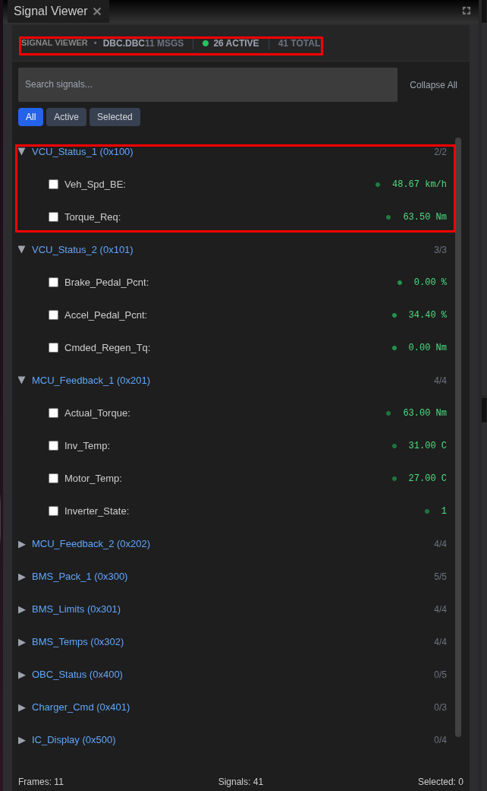
- Select signals for charting:
- Check
Motor_Spdfrom MCU_Feedback_1 - Check
Actual_Torquefrom MCU_Feedback_1 - Check
SOCfrom BMS_Pack_1
Step 14: Chart and Analyze Signal Patterns¶
Visualize signal behavior over time to identify anomalies.
- View the Signal Chart panel (right side):
- Selected signals appear as colored lines
- Time axis along the bottom
-
Value axis on the left
-
Configure chart settings:
- Time Window: Set to 30 seconds for detail
-
Auto-scale: Enable to fit all values
-
Identify the anomaly:
- Play through the log while watching the chart
- Look for unusual patterns:
- Torque oscillations during regen braking
- SOC discontinuities
- Motor speed spikes without torque request
- Click Pause when you spot an issue
- Note the timestamp
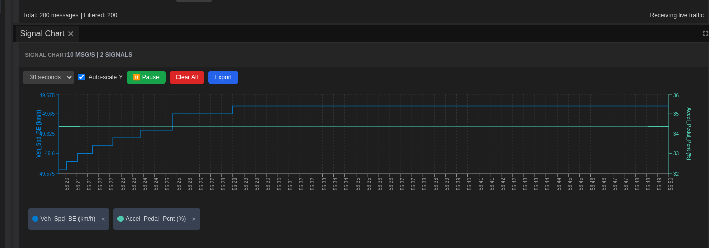
- Zoom into the problem area:
- Use mouse wheel to zoom time axis
-
Click and drag to pan along timeline
-
Document findings:
- Right-click on chart → Export Chart
- Save as
torque_anomaly_chart.png
Part 4: Signal Injection Testing¶
Step 15: Prepare for Signal Injection¶
Test how the system responds to controlled inputs.
- Access injection controls in the Signal Player & Injection panel:
- Look for the Injection section on the right side
- Controls include: Start all, Pause all, Stop all, Clear all
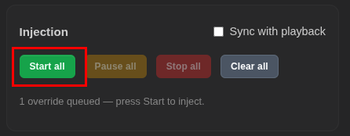
- Safety considerations:
Injection Safety
Signal injection sends CAN frames to the network and can affect running ECUs.
- Only inject into test bench systems
- Never inject into production vehicles
- Monitor system response carefully
Step 16: Configure and Execute Injection¶
Set up a controlled test to reproduce the issue.
- Select signals for injection in Signal Viewer:
- Click on a signal row to open the injection options dialog
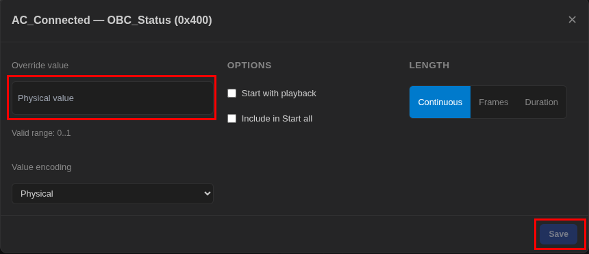
- Configure injection parameters:
- Override value: Enter the physical value to inject (e.g., 50% for Accel_Pedal_Pcnt)
- Start with playback: Enable to sync with playback
- Include in Start all: Enable to include in bulk start
-
Length: Choose Continuous, Frames, or Duration
-
Select the signal for injection by clicking its checkbox
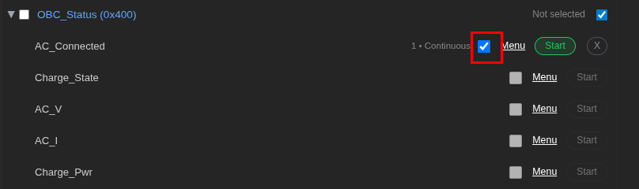
- Start injection:
- Click Start all in injection controls
-
Monitor the response in Network Traffic and Signal Chart
-
Analyze system response:
- Does the torque oscillation reproduce?
- How do related signals respond?
-
Check ECU Console for any diagnostic messages
-
Stop injection:
- Click Stop all when test completes
- Document the results
Part 5: Data Export and Documentation¶
Step 17: Export Analysis Data¶
Save your findings for reporting and further analysis.
Export Console Logs¶
- In the ECU Console panel, click Export
- Choose format:
- Text (.txt): Human-readable format
- CSV (.csv): For spreadsheet analysis
- JSON (.json): For automated processing
- Save as:
drive_cycle_console_log.txt
Export Network Traffic¶
- In the Network Traffic panel, click Export
- Choose format:
- Text (.txt): Plain text format
- CSV (.csv): Spreadsheet-compatible
- JSON (.json): Structured data
- candump: Standard CAN log format
- Save as:
drive_cycle_traffic.csv
Capture Traffic to Log File¶
For recording traffic to industry-standard formats:
- Click Configure in the Network Traffic toolbar
- Select the network/channel to capture
- Choose output format: BLF (Vector), MDF4, or CSV
- Click Start Capture to begin recording
- Click Stop Capture when done
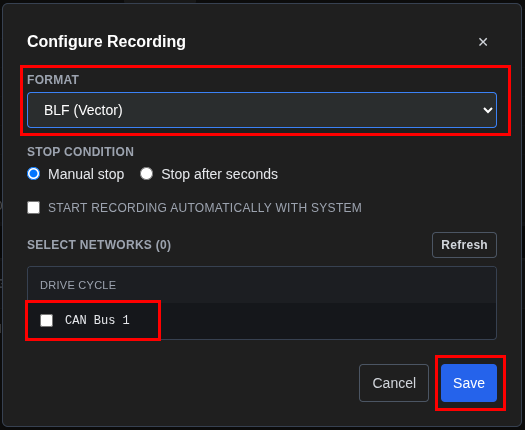
Export Signal Charts¶
- Right-click on Signal Chart
- Select Export Chart
- Save as PNG for reports
Step 18: Create Analysis Summary¶
Document your findings for the team.
- Compile findings:
- Anomaly timestamp: Exact time of issue
- Affected signals: Motor_Spd, Actual_Torque, Regen_Active
- Pattern description: Torque oscillation during regen
- Injection results: Reproduced with specific pedal input
-
Potential causes: Control loop timing, CAN message priority
-
Organize deliverables:
DriveAnalysis/
├── truefidelity-system.json # System configuration
├── exports/
│ ├── drive_cycle_traffic.csv # Network traffic data
│ ├── drive_cycle_console.txt # Console logs
│ └── torque_anomaly_chart.png # Chart screenshot
├── logs/
│ └── drive_cycle_capture.blf # Original capture
└── analysis_summary.md # Summary document
- Write summary document:
Document Header: - Title: "Drive Cycle Analysis Summary" - Date: [Current Date] - Engineer: [Your Name]
Issue Description: - Primary issue: Torque oscillations during regenerative braking - Affected ECUs: MCU, VCU
Key Findings: - Anomaly timestamp: 14:32:15.234 - Motor torque oscillates ±50 Nm during regen - Pattern correlates with Regen_Active signal transitions - BMS SOC reporting delayed by ~100ms
Injection Testing Results: - Test: Brake pedal injection at 30% - Result: Oscillation reproduced - Observation: MCU response delayed when BMS limits active
Recommendations: - Review MCU regen control loop timing - Verify BMS message priority on CAN bus - Check SOC calculation algorithm
Part 6: System Cleanup¶
Step 19: Stop and Clean Up¶
Properly shut down the system after analysis.
- Stop the running system:
- Click the Stop button in toolbar
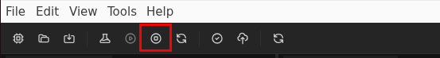
- Verify clean shutdown:
- Check Console for any error messages
-
ECU Status shows all ECUs as "Stopped"
-
Save final system state:
-
File → Save to preserve any changes
-
Export logs before closing (recommended):
- Console logs capture diagnostic data
-
Network traffic preserves communication patterns
-
Clean up Docker resources (optional): ```bash # List TrueFidelity containers docker ps -a | grep truefidelity
# Remove stopped containers docker container prune ```
Troubleshooting Guide¶
Common Issues and Solutions¶
ECUs Won't Start¶
Symptom: ECUs remain in "Stopped" state
Solutions: 1. Verify Docker Desktop is running 2. Check Console for error messages 3. Ensure firmware paths are correct (if specified) 4. Verify memory limits are reasonable (minimum 128MB)
No CAN Traffic Visible¶
Symptom: Network Traffic panel stays empty
Solutions: 1. Verify system is running (not just built) 2. Check BLF file is loaded and Play is pressed 3. Confirm DBC file is properly associated 4. Clear any restrictive filters
Signals Not Decoding¶
Symptom: See CAN IDs but no signal names
Solutions: 1. Verify DBC file path in network properties 2. Check DBC contains definitions for your CAN IDs 3. Reload system after DBC changes
Playback Not Working¶
Symptom: Play button disabled or nothing happens
Solutions: 1. System must be running first 2. BLF file must be loaded 3. Check file isn't corrupted 4. Verify sufficient memory for large logs
Chart Not Updating¶
Symptom: Signal Chart remains empty
Solutions: 1. Select signals in Signal Viewer first (checkboxes) 2. Ensure playback is running 3. Check time window settings 4. Enable Auto-scale
Performance Tips¶
- For large BLF files:
- Close unnecessary panels to free memory
- Use filters to reduce displayed data
-
Export smaller time ranges
-
For smooth playback:
- Limit number of charted signals (3-5 recommended)
- Reduce Signal Chart time window
- Disable auto-scroll in Network Traffic
Summary¶
You've successfully completed a full EV drive cycle analysis workflow in TrueFidelity:
- ✅ Created and configured a multi-ECU EV powertrain system
- ✅ Connected VCU, MCU, and BMS to a shared CAN network
- ✅ Deployed the system using Docker containers
- ✅ Monitored system health and console logs
- ✅ Loaded and played back captured CAN logs
- ✅ Analyzed decoded signals from the DBC file
- ✅ Performed signal injection testing
- ✅ Exported data for documentation and reporting
This workflow forms the foundation for EV powertrain testing, validation, and debugging. Practice with different log files and signal patterns to build expertise with the TrueFidelity platform.
Next Steps¶
Immediate Actions¶
- Practice with your own logs: Load captured data from your test vehicles
- Explore advanced filtering: Master signal search and traffic filtering
- Create custom layouts: Optimize panel arrangement for your workflow
Advanced Topics¶
- GDB Debugging: Enable debug mode for detailed firmware analysis
- Multi-Network Systems: Create topologies with multiple CAN/LIN buses
- Automated Testing: Use TrueFidelity's API for CI/CD integration
Related Tutorials¶
- System Design Workflow: Detailed ECU configuration guide
- ECU Monitoring Walkthrough: Deep dive into monitoring tools
- DBC & Signal Definitions: Working with signal databases